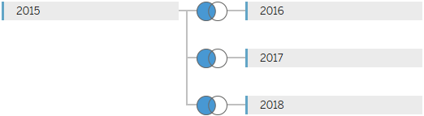
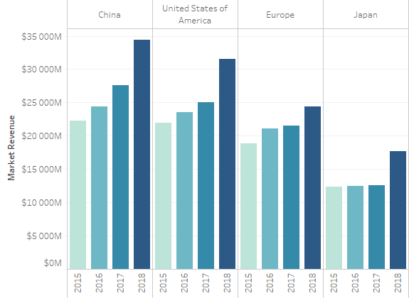
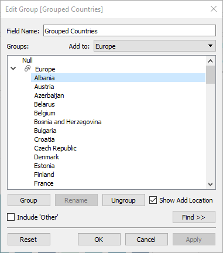
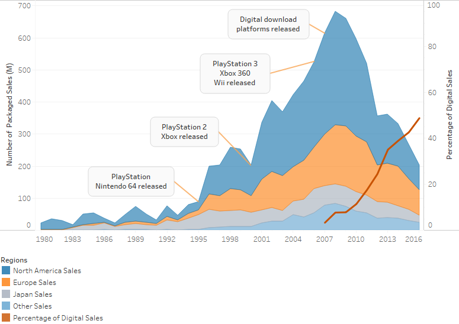
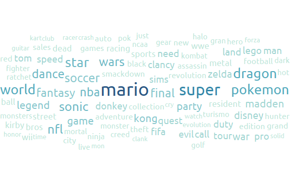
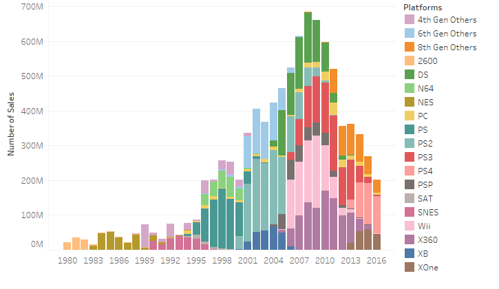
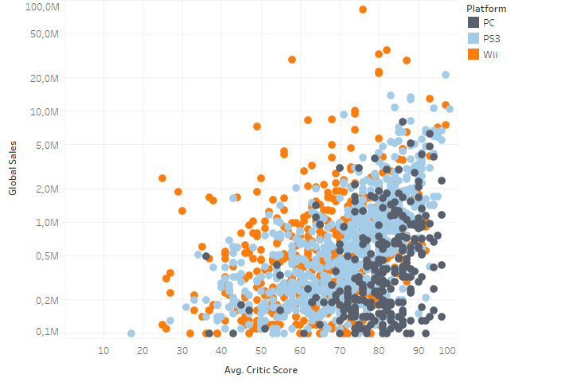

The video game industry is growing every year with new products and technologies. Experts expect the industry will be worth $138 billion by the end of 2018. The industry has a bigger impact on our daily lives than we thought. For example, processor and graphics cards manufacturers develop more and more powerful units along the years for us to run the latest game titles. But most users don't use that much power. A humble PC can run any operating system or office software to run our routine non-gaming tasks on PC.
In my project, Analysis of the Video Game Industry, I analyzed 16,715 game titles released in the last 35 years and tried not just to create some visualizations but to give a brief history of the industry as well. During the visualizations, you will see which countries are leading the industry, how the internet has changed it, life cycles/successes/failures of gaming consoles and how game critics affected the sales of video games.
I used 3 datasets:
Sources:
In Video Game Sales With Ratings, there are 16,715 game titles. The ones that I used are; platform they have been released, sales in North America, Europe and Japan and Critic Scores.
In Top 100 Countries/Markets by Game Revenues, countries listed along with their total revenues. I combined the years 2015, 2016, 2017 and 2018 in one single Excel file. I used relationships (left join by Country) between the sheets, as can be seen below:

In annual reports of Electronic Arts and Ubisoft, I referred to their fiscal year reports between the years 2007-2018. The file contains packaged sales and digital sales, year by year.
All of the sources are public and can be found in the "Datasets" folder in the main folder of the project.
Type: Excel, CSV
Size: 1,59 MB. 16,715 Game Titles
Transformations:
Video Game Sales With Ratings:
Top 100 Countries/Markets by Game Revenues
I used bar graph, line (area) graph, stacked bars and scatter plots to create visualizations. All visualizations were created in Tableau Desktop version 2018.2.
Bar graphs are a good way to compare values between different groups (Y axis) and track changes over time (X axis). Bar graphs work best when the changes over time are large (but not massive). Data can be visualized both vertically and horizontally. In Top Countries By Game Revenues visualization, I choose bar graphs to show the growth of the industry for the last 4 years.
Possible use cases: Poll results, how Y value changed in X years...
Line graphs often used to visualize real-time or more frequent ticks of data. Area graphs are a kind of line graphs. Area graphs work the best when comparing two or more related groups. In Global Sales By Year visualization, I choose area graph to determine dramatic ups and downs in the industry.
Possible use cases: Telemetry data, exchange rates...
Word clouds are used to spot word frequencies. They reflect the topic; for example a word cloud of a political topic contain words like freedom, employment, government while a music topic can contain words like sound, equipment, classical etc.
Possible use cases: Analyzing surveys, creating keywords...
Stacked bars are a kind of bar graphs but this time, the bars are divided and can contain more than one variable. In Game Sales by Platforms visualization, there are multiple gaming platforms in one year so I used stacked bars to present them.
Possible use cases: Similar as for bar graphs.
Scatter plots (a.k.a. X-Y plots) are used to present relationships between two different values. If both variables increase, it means that they have a positive relationship. If one variable decreases while the other increases, it means that they have a negative relationship. That is just what I needed to present at the Global Sales vs. Average Critic Scores visualization. X level represents the game's critic scores and Y level represents global sales of the game.
Possible use cases: When any relationships need to be visualized.
Benefit: Bar graphs are useful for displaying steady increase or decrease of the data [1]. They are very easy to understand especially when the data is sorted.
Cost: They are not very useful for real-time data since they are not optimal to display small changes in the data. The data should not fluctuate otherwise comparing the data would be difficult.
Benefit: Line graphs are useful for displaying trends of the data. Y axis could represent anything, but X level ordinarily represents time [2]. They are also a good way to represent intersecting data.
Cost: They can not be sorted through the X axis: the data always flows from left to right.
Benefit: They are visually appealing. Hundreds of data can be displayed...
Cost: ...but displaying that much data makes more difficult to find a specific one. The size of the word might not be represent the main idea of the topic.
Benefit: Stacked bars work well when total and subtotals need to be shown at the same time.
Cost: Too many stacks make the data too complicated to understand.
Benefit: Scatter plots are one of the rare visualizations that is used to represent relationships between two (or more) data.
Cost: They are difficult to understand for a novice user. Adding a third measure to the axes makes them even more difficult to understand. Some values may be placed on top of each other [3].

First, I wanted to combine 4 different Country fields, because different years contain some different countries. I created a new group named Europe and added European countries in it. Then I created a calculated field named Total Value in 4 Years. This field was used to filter the countries by their total market revenues.
I dragged Grouped Countries and Measure Names to Columns. Then I dragged Measure Values to Rows. While holding "Ctrl" key, I dragged Measure Values from the Rows to Filters and selected 2015, 2016, 2017 and 2018. After that, I dragged Total Value in 4 Years to Filters and selected "Sum". I selected "At least 10 000 000 000" as a filter and applied. Then I clicked Grouped Countries in the Rows and sorted as descending order. This sorted the countries by their total revenues in 4 years.
From the Data pane, select Top 100 Countries-Markets by Game Revenues 2015-2018 source.
Under Dimensions, hold down "Ctrl" key and select all fields named Country, right-click any of it, select Transform>Merge mismatched fields. Name the new field as Grouped Countries and add Europe countries to the new Europe group (image below).

From the Data pane, under Measures, right click to an empty space and select Create>Calculated Field. Name the new field as "Total Value in 4 Years". Enter the calculation below and click Apply.
[Total Revenues in US Dollars]+[Total Revenues in US Dollars (2016)]+[Total Revenues in US Dollars (2017)]+[Total Revenues in US Dollars (2018)]
From the Data pane, under Dimensions, hold down the "Ctrl" key, select Grouped Countries and Measure Values to Columns pane.
From the Data pane, under Measures, drag Measure Values to Rows pane.
While holding "Ctrl" key, drag Measure Values from the Rows pane to Filters card. Select 2015, 2016, 2017 and 2018 values only and click Apply.
From the Data pane, under Measures, drag Total Value in 4 Years to Filters card. Select "Sum", click Next, select "At least" and enter "10 000 000 000". Click apply.
Click Grouped Countries on the Columns pane and click Sort Descending button.
Miscellaneous: Colored the bars by while holding "Ctrl" key, dragged Measure Names to Color. Hide Grouped Countries field label. Renamed Measure Values axis as Total Revenues and changed its number format to millions.

I wanted the show "Percentage of Digital Sales" differently from the Packaged sales because when I used Area for the percentage, it didn't look clear and it made the visualization more complex. To solve this, I used Line as mark type. It looks more clear and eye-catching.

I used an online word count program to count words in the game titles in the Video Game Sales dataset. Then I saved the results to a new Excel file; games-wordcounts.xlsx. I tried to combine sequences as much as possible, for example, "FIFA 2010" and "FIFA 2011" counted as 1 time, but "FIFA 2010" and "2006 FIFA World Cup Germany" counted 2 times since they are different sequences.

For this visualization, I tried not to exceed 20 platforms because it would be difficult to show that much color. Because of this, I excluded the least popular platforms and grouped some platforms by their release time (4th Generation etc.).

I could use a different shape for each platform, but they looked more complicated when I tried that.
Here I list 5 design guidelines that I used.
[G1.2] Important data should be represented by graphical elements that are more visually distinct than those representing less important information.
In the Global Sales By Year visualization, I used a line unlike the other area values, because the Percentage of Digital Sales value is so important. It is the main reason why Number of Packaged Sales value decreased at that specific time.
[G1.3] Greater numerical quantities should be represented by more distinct graphical elements.
In the Top Countries By Game Revenues visualization, I used faded color for older years and darker color for newer years. This made easier for users to focus on the year we live in. In the Word Cloud visualization, the color is getting darker and the size is getting bigger as the word is used more often.
[G4.1] Use more saturated colors when color coding small symbols, thin lines, or other small areas. Use less saturated colors for coding large areas.
In the Global Sales By Year visualization, the "line area" occupies a large part so I decreased the opacity of the colors to decrease the saturation. In the Global Sales vs. Average Critic Scores I used saturated colors since the circles are small and overlapped.
[G6.16] When using overlapping textures to separate overlapping regions in a display, avoid patterns that can lead to aliasing problems when they are combined.
In the Global Sales vs. Average Critic Scores visualization, there are many overlapping data. I tried to use different shapes but it caused aliasing problems as described in the guideline. So I used the filled circle for all of the categories but changed their color. The shapes are the same but the categories remain distinguishable.
Consistency and standards: Users should not have to wonder whether different words, situations, or actions mean the same thing. Follow platform conventions. (from "Nielsen’s Heuristics")
I tried to stick to a consistent color palette in the visualizations; blue, orange and gray. These colors are also improve accessibility for color blind people. I avoided to use industry-specific terms in the visualizations so that any person that have no idea about the industry can read the visualizations or comment on them.
In the Top Countries By Game Revenues, current leader countries can be seen year by year. The first thing to realize that the game revenue is increasing globally. China, U.S.A. and Japan are leading the industry, and Europe, nearly 40 countries combined, can barely compete with these 3 countries.
In the Global Sales By Year, number of game sales visualized as packaged (retail) and digital. Video game industry was fluctuant between the years 1980 - 1993. The sales mostly followed an upwards trend for about 15 years. Major console releases, like PlayStation or Xbox, have boosted the sales.
In the Global Sales By Year, it can be seen that the digital download platforms (e.g. Steam, PlayStation Network) released in 2007 and after a year, packaged sales has begun to decrease. Less than 10 years, Percentage of Digital Sales of companies has reached nearly 50%.
In the Word Cloud, most frequently used words in the game titles grouped. The most used word is "mario", followed by "super", "pokemon" and "dragon". This word cloud can give an idea which game brands are the most popular. Everybody knows Super Mario brand and the word dragon is very common in fantasy games.
In the Game Sales By Platforms, many information can be extracted. Early years, two platforms were dominating the industry: Atari 2600 and NES (Nintendo Entertainment System). A bar in this visualization shows which platforms are popular in that specific year. The most important information we can get is average lifespan of platforms. According to the visualization, a platform's most productive years are between 6-8 years (except PC).
In the Game Sales By Platforms, we can see that when a new successor released for a platform, the game sales still continue to sell for a couple of years. For example, when PlayStation 4 released, PlayStation 3 sales were still high for 3 years.
In the Global Sales vs. Average Critic Scores, game titles displayed by their critic scores (from game reviews) and how much they sold. I used a linear Y axis to represent this visualization because the gaps are too big; the most sold title (Wii Sports, 82,5 Million) has sold twice of the closest title (Mario Kart Wii, 35,5 Million).
The purpose of this visualization is to show how critic scores affect the sales of the video games. It can be seen that the game sales are mostly directly proportional with the critic scores: higher scores means higher sells. But we see some interesting results. When we look at Wii, we can see that many titles with lower scores have sold more than any platform. For example, the best selling game Wii Sports has sold 82,5 Million while its critic score is 76, an average score. On the other hand, we see that the PC titles are mostly scattered at the bottom right side, which means many titles with higher scores have not sold that much.
I used following the web sites as a reference, apart from the course book:
[1] National Center for Education Statistics. How to choose which type of graph to use? URL: https://nces.ed.gov/nceskids/help/user_guide/graph/whentouse.asp
[2] sciencing.com. The Difference Between Bar Graphs and Line Graphs. 2018. URL: https://sciencing.com/difference-bar-graphs-line-graphs-6471264.html
[3] qliq.com. When to use a scatter plot? URL: https://help.qlik.com/en-US/sense/September2017/Subsystems/Hub/Content/Visualizations/ScatterPlot/when-to-use-scatter-plot.htm